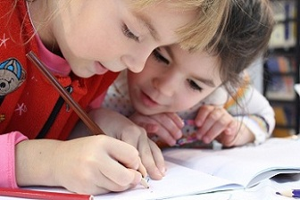
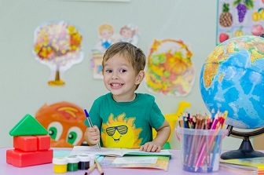

INTERVENCIÓN PSICOPEDAGÓGICA
Los problemas de aprendizaje más comunes son el bajo rendimiento escolar, las dificultades en el lenguaje oral como hablar en frases entrecortadas o dejar oraciones incompletas, las dificultades en el razonamiento lógico-matemático (depender de contar con los dedos, por ejemplo), la falta de concentración y/o atención, las dificultades de memoria, dificultades en la adquisición de la lectoescritura, como por ejemplo; faltas de ortografía, problemas con el copiado, confusión de números y palabras, revertir las letras y los números, leer y volver a leer sin comprensión
- Otras patologías:
- Síndrome de Down
- Parálisis cerebral
- Transtornos del espectro autista
- Discapacidad intelectual
- Transtorno de atención con hiperactividad
- Síndrome del emperador
Dirigido a:
- Niños
- Adolescentes
- Adultos
TALLER DE ATENCIÓN Y CONCENTRACIÓN

Este taller ofrece la posibilidad de ampliar su nivel de atención sostenida, tener varias formas de retener y analizar una información lo cual ayudara en su rendimiento escolar.
Dirigido a:
- Niños
- Adolescentes
- Adultos
Duración: 2 Meses
El leer y escribir se aprenden conjuntamente como procesos dinámicos y constructivos.
El taller tiene como objetivo ejercitar las habilidades como la observación reflexiva, la identificación, la comparación, la resolución de problemas, el análisis, la síntesis, la formulación de hipótesis y reglas, lo cual permite que el niño tenga una actitud reflexiva y crítica, de diálogo y tolerancia, constancia y capacidad de resiliencia.
Dirigido a: Niños a partir de 6 años
Duración: 2 Meses
TALLER DE GRAFOMOTRICIDAD

La grafo motricidad hace referencia al movimiento que debe hacer la mano para cumplir con determinada actividad, es decir, el movimiento que el niño hace cuando escribe o dibuja.
El taller, busca mejorar la armonía tónica, la direccionalidad, la segmentación, para que el pequeño consiga potenciar su rapidez, la legibilidad, la armonía y la fluidez en su escritura o en los movimientos que realizan con las manos.